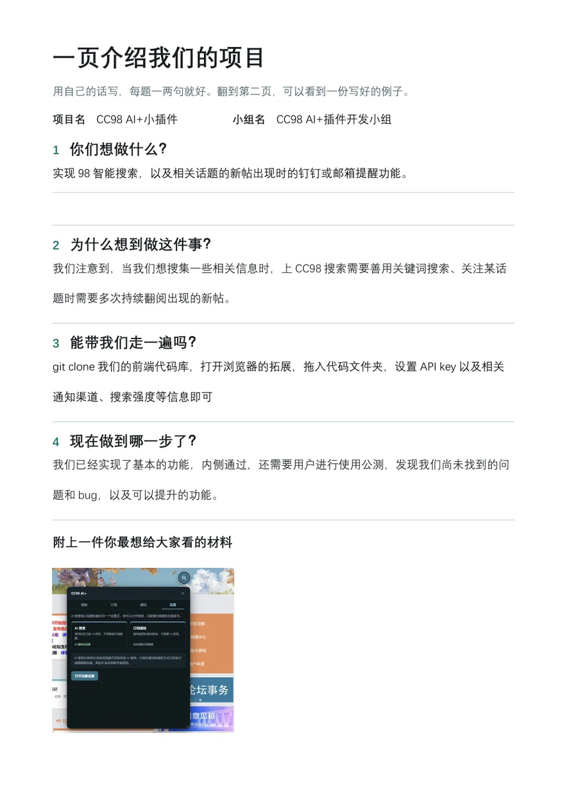

返回软件项目索引
返回软件项目索引CC98 AI+插件
阅读项目文档 ↓由于CC98的搜索栏只能进行词语精确匹配，且无法订阅某一话题，用户想要搜索某个主题只能将相关的词语一个一个搜索并注意翻阅，因此我们开发了一款根据用户提示语句或关键词AI自动搜索的插件，既能帮助用户快速得到相关主题的、具有较高质量的信息，又具备订阅某一个主题、当某个订阅主题的新帖出现时能够使用钉钉或者邮箱进行提示的功能，用户需要通过浙大邮箱进行注册登录，可以设置搜索强度和通知渠道、通知时间间隔等内容。


项目文档
CC98 AI+
CC98 AI+
一、项目基本信息
二、项目简介
三、核心使用流程
在Github上面拉取前端代码，打开浏览器拓展，将项目文件夹拖入
之后用该浏览器打开CC98（支持VPN访问），右下角出现插件图标
即可使用
四、技术与实现
前端
主要技术
- 运行环境：Chrome Extensions Manifest V3，兼容 Edge。
- 语言 / 模块：原生 JavaScript（ES Modules），零构建、零框架、无 npm 运行时依赖。
- 进程模型：内容脚本（注入页面、管 UI 与业务）＋ 后台 Service Worker（网络转发、徽章轮询）＋独立设置页 / 工具栏弹窗。
- 存储：chrome.storage.local（LLM 配置、后端 JWT，持久化）；chrome.storage.session（CC98 登录态，内存态，关浏览器即清空）。
- 网络：所有跨域请求经 chrome.runtime.sendMessage 转发到 Service Worker 统一 fetch，绕过 CORS。
开发工具
- Chrome DevTools（F12）＋ chrome://extensions「开发者模式 / 加载已解压的扩展程序」。
- Git + GitHub 私有仓库（前后端分工协作）。
- AI 编程助手：Claude Code（辅助代码生成、联调与文档）。
公共 API / 外部服务
用途 · 地址 · 说明
LLM 推理 · 用户自配 · OpenAI 兼容 + Anthropic 双协议
钉钉机器人 · oapi.dingtalk.com Webhook · 通知渠道之一
开源组件 / AI 编程工具
- 开源组件：marked（本地打包的 Markdown 渲染库，vendor/marked.esm.js，不走 CDN）；其余为 Chrome 平台 API，无第三方运行时依赖。
- AI 编程工具：Claude Code。
核心功能实现方式
1. AI 搜索总结（状态机流水线）
search-pipeline.js 编排 5 个阶段，带进度回调、可随时中止：拆分关键词 → 搜索 CC98 → 筛选主题 → 阅读回复 → 生成总结
- 拆分关键词（keyword-generator.js）：调 LLM 把自然语言问题拆成 N 个搜索关键词，JSON 容错解析，失败回退到中文分词。
- 搜索 CC98（cc98-searcher.js）：调 /topic/search，内置 1.2s 限速、分页、去重、403 重试。
- 筛选主题（phase1-filter.js）：按「标题关键词重叠 + 回复数/点击数热度」做启发式评分取 Top N，不引入 embedding 重排。
- 阅读回复（reply-reader.js）：逐帖读主题详情与楼层，清洗 HTML、按字数截断；单帖失败不致命。
- 生成总结（summarizer.js）：把主题 + 楼层拼成文本交给 LLM，输出带来源编号的 Markdown 总结。
2. 订阅新帖提醒（前端配置，后端推送）
- 订阅：订阅表达式「空格 = 且，/ = 或」，实时解析校验，单账号最多 10 个订阅。
- 后端固定每 10 分钟扫描新帖、命中合并推送；前端不轮询，打开通知页时读取、60s 内走本机缓存。
3. 登录态与安全边界
- 转发请求默认 credentials:'omit' 不带 cookie（WebVPN 除外），论坛内容用 <forum_content> 标签包裹防提示词注入。
4. 校外 WebVPN 适配
WebVPN 把主机名用 AES-128-CFB 加密进路径；WebCrypto 不支持 CFB，扩展用「零 IV 单块 AES-CBC + 手工 CFB 反馈链」实现 CFB，动态算出 api.cc98.org 的编码路径，搜索结果链接也指向 WebVPN。
后端
主要技术
- 运行环境：Python 后端服务，基于 FastAPI 提供 HTTP API。
- Web 框架：FastAPI + Uvicorn，用于提供登录、订阅、通知、扫描等接口。
- 数据库：SQLite + SQLAlchemy ORM，保存用户、订阅、通知渠道、通知历史和扫描游标。
- 定时任务：APScheduler，后端按固定间隔扫描 CC98 全站新帖。
核心功能实现方式
1. 用户登录与鉴权
2. 订阅管理
后端提供订阅的创建、查看、修改和删除接口。用户可以创建最多 10 条订阅。订阅表达式规则为：
Plain Text
空格 = 且
/ = 或
例如：
Plain Text
微积分/微甲/vjf 历年卷
表示帖子内容需要同时包含“历年卷”，并且还要包含“微积分 / 微甲 / vjf”中的任意一个。后端会对订阅表达式做基本校验，过滤过短或无效关键词，减少误报。
3. 新帖扫描（完整流程图可在后端 README 查看）
如果服务器需要通过 RVPN 或代理访问 CC98，可以通过 CC98_TRUST_ENV 控制后端是否读取系统代理环境变量。
4. 匹配与去重
后端会把新帖与所有启用订阅进行匹配。匹配命中后生成通知记录。为了避免刷屏，系统在多个层面做去重：
阶段 · 处理目标
新帖扫描 · 避免同一轮扫描中重复处理同一帖子
帖子记录 · 同一个 CC98 Topic 只保留一份记录
订阅匹配 · 同一用户的多条订阅命中同一帖子时只生成一次结果
通知记录 · 同一用户对同一帖子最多拥有一条通知
5. 通知渠道
6. 后台管理与部署
主要接口
Security & Privacy
我们尽量让敏感信息只存在于真正需要它的位置。
数据 · 保存位置 · 是否上传产品后端
AI Search 问题与结果 · 浏览器 · 否
CC98 AI+ 登录状态 · 浏览器 · 调用 Watch API 时携带
用户订阅 · 后端数据库 · 是
通知历史 · 后端数据库 · 是
此外，当前项目还包含以下安全措施：
- 验证码具有有效期和错误尝试次数限制；
- 用户接口根据登录状态识别当前用户，不接受客户端自行指定其他 user_id；
- 管理接口使用独立的管理员认证；
- 生产环境可以关闭公开 API 文档并限制允许访问后端的前端来源。
五、小组分工
成员 · 任务 · 具体内容
六、开发过程
本项目最初围绕 CC98 的信息检索和订阅提醒展开。由于黑客松时间有限，我们没有一开始就追求完整的大系统，而是先确定 MVP 目标：让用户能够在 CC98 页面中使用插件进行 AI 搜索，同时可以设置订阅关键词，在后续出现相关新帖时收到提醒。
在订阅功能的 watch 后端实现方法上，我们一开始的方案是在后端定时搜索用户设置的关键词。后来测试发现，CC98 全站产生的新帖从发布到能够通过搜索接口搜到，通常会有一到两个小时甚至半天的延迟，如果订阅功能依赖搜索接口，就无法及时提醒。因此我们把订阅功能调整为后端主动扫描 CC98 全站新帖列表，主动和用户设置的订阅匹配，而不是扫描搜索结果。这样可以更符合“关注之后及时发现新内容”的使用场景。
后端关键词规则也经过了多轮讨论和调整。最初的方案是全部调用 LLM 做模糊匹配，但是很难控制成本。我们希望它既接近普通搜索习惯，又能表达同义词关系。最终采用空格表示 AND、斜杠 / 表示 OR 的规则。例如 微积分/微甲/vjf 历年卷 资料 表示必须同时匹配“历年卷”和“资料”，同时“微积分、微甲、vjf”中任意一个出现即可。测试时我们使用过 大一/求助/军训 这类关键词做烟测，因为相关新帖较多，更容易验证订阅提醒链路。
在匹配规则测试中，我们也发现了一些边界问题。例如过短关键词会带来大量误匹配，单字关键词很容易命中无关帖子；同时，部分标点如果处理不当，可能会影响像 C++ 这样的关键词。因此后端对订阅表达式增加了长度限制和基础校验，尽量避免单字泛匹配、超长表达式和异常输入带来的误报或滥用风险。
通知功能在开发过程中也做过优化。早期测试时，多个订阅命中同一个帖子可能导致重复提醒，钉钉消息也容易刷屏。后来我们把同一轮扫描中命中的帖子合并成一条通知，并增加去重逻辑，避免同一个用户、同一个帖子、同一个渠道被重复发送。这样用户收到的是一条包含多个匹配帖子的汇总消息，而不是连续多条零散提醒。
七、项目视频演示
[CC98 AI+ 演示视频.mp4]
八、项目不足与后续计划
- 会话历史记录保存。
- 如果说一些需要人工大量调研研究的信息可能还需人工 ，而且貌似ai搜索范围不大 基本上跟人差不多 总结部分可能还人看得细一点 ai总结可能会遗漏一些细节 总结可能会携带不care的信息比如作者完整id名（虽然这样更真实有信但会加重读回答的负担）。
- 感觉最大的限制在于搜索范围的问题？目前ai搜索范围人工完成也不久，如果要有替代性可能需要发挥ai多轮有方向的搜捕大数据能力， 或许可以根据问题决定搜索范围，多轮不断完善 读取可以可视化一下 让用户比较清楚 比如结果页能显示本次实际搜索和阅读范围，比如找到多少个不同帖子、成功读了多少帖、有没有读取失败。
- 搜索结果或许可以支持继续追问或补搜，保留已经读过的帖子，只处理新增内容。不需要每次重新开始整套搜索。